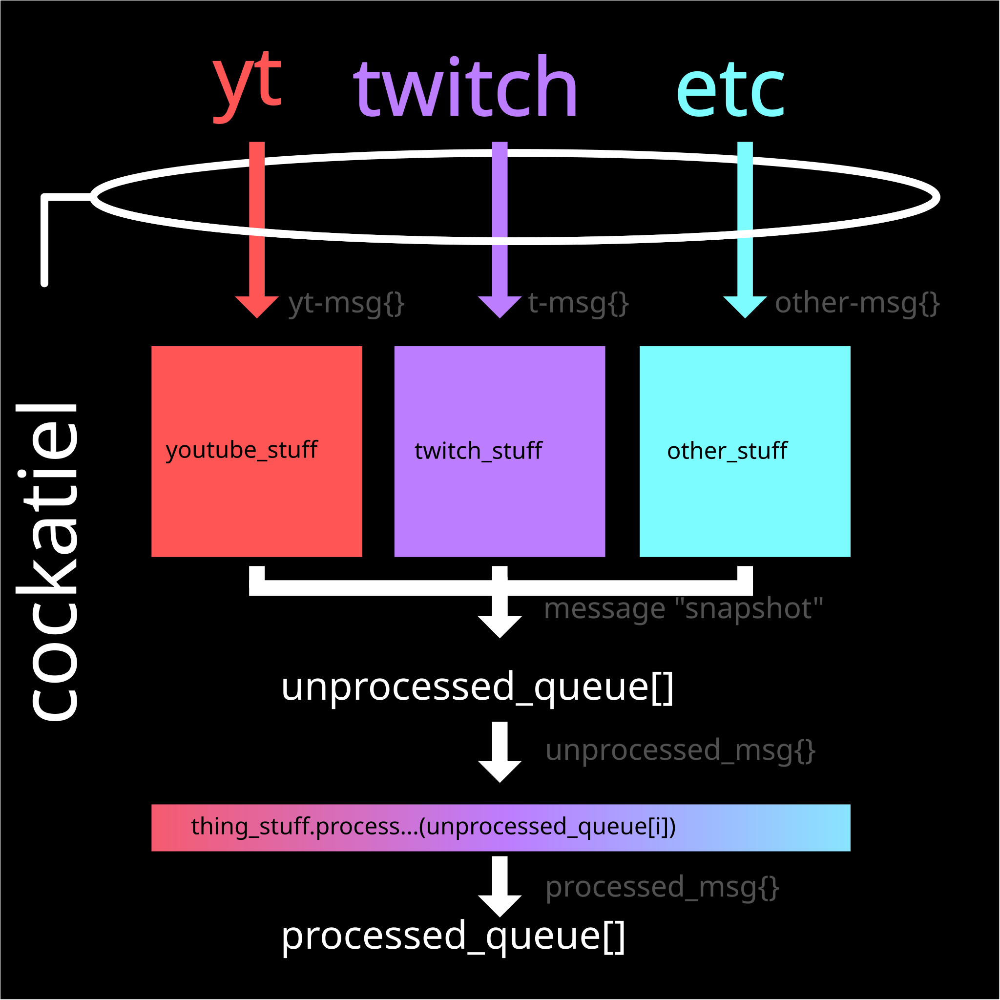

<!DOCTYPE html>
<html lang="en" style="">
	<style>
		@media (prefers-color-scheme: dark) {
			html {
				background-color: #000;
				color: white;
			}
		}

		@media (prefers-color-scheme: light) {
			html {
				background-color: #eee;
				color: #000;
			}
		}

		@font-face {
			font-family: vulbytesFont; /* set name */
			src: url(../assets/fonts/test09-v1r42.otf); /* url of the font */
		}

		details > summary {
			/*color: orange;	*/
		}

		.beingDragged {
			filter: opacity(0.5);
		}

		* {font-family: vulbytesFont, Helvetica, Arial, sans-serif;}
	</style>
<head>	
	<meta charset="UTF-8">
	<meta name="viewport" content="width=device-width, initial-scale=1.0">
	<link rel="icon" type="image/x-icon" href="../assets/cockatiel_process_diagram.svg
">
	<title>Cockatiels local test/run</title>
	<!--
		<details><summary>if you're curious how cockatiel works, or wanna mod it; here's a simple diagram</summary>
			<div style="max-width:40rem;">
					</img>
			</div>
		</details>
	-->
		<script type="module">
			window.debug = true;
			import {Cockatiel} from './Cockatiel.mjs';
			window.Cockatiel = await new Cockatiel(); 
			document.addEventListener("DOMContentLoaded", async (event) => {
				console.log("initing Cockatiel");
				try{
					await window.Cockatiel.Init();
					console.log("init success");
				}
				catch(err){
					console.error("init fail", err, err.stack);
				}
			});
			console.log("Cockatiel added to window");
			/*
			window.tibSleepingAnimation = await fetch("./tib_stuff/tib_sleeping.gif");
			console.log("added the eepy them");
			*/
		</script>
</head>
<body>
	<div id="cockatiel-settings_container"></div>
</body>
</html>
